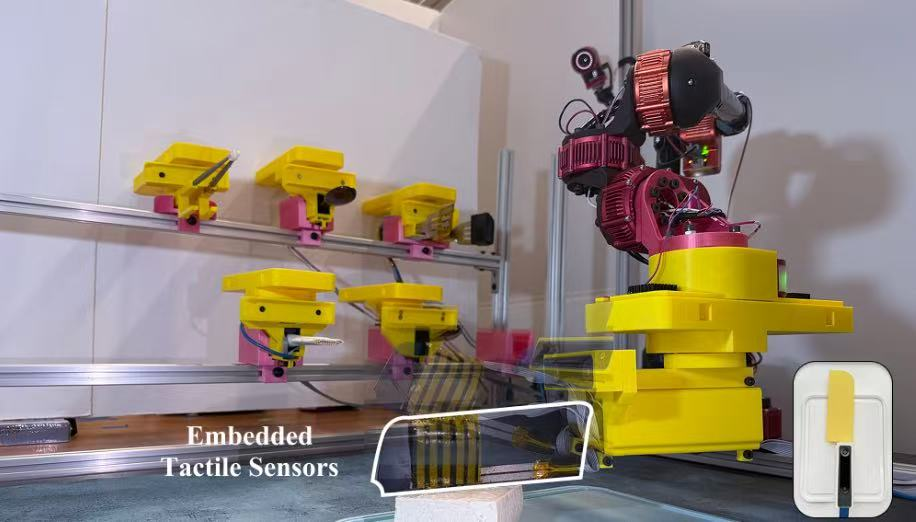
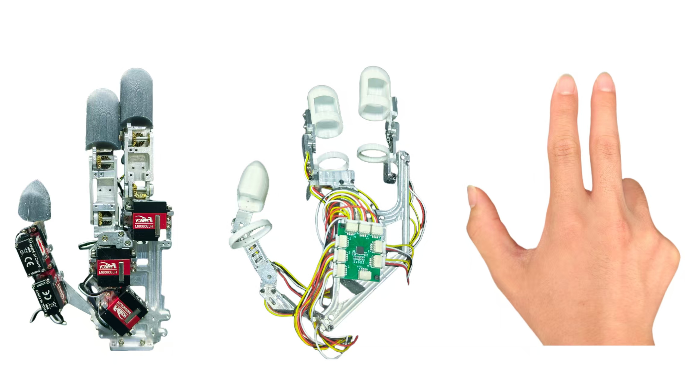

|
Ruihan Gao I'm an undergraduate student at the University of Washington, currently a student researcher in Personal Robotics Lab, advised by Prof. Siddhartha Srinivasa. Also, I'm honored to work with Prof. Yiyue Luo and PhD student Yunchu Zhang. My research interests lie in robot design and robot learning.
Previously, I was fortunate to work as a research assistant at the Institute for AI Industry Research,
Tsinghua University, advised by Prof.
Guyue Zhou.
|

|
Ruihan Gao - Robotics ResearcherNewsResearchI am passionate about robot design and robot learning, My goal is to build reliable system to enhance robotic performance. My dream is to become a full-stack roboticist. Herein I present some of my past projects. |
|  |
UTIL: Universal Tool-Centric Interface for Long-Horizon and Multi-Tool Manipulation
Ruihan Gao*, Yuechen Yang*, Juanhan Jiao, Yuxuan Miao, Yunchu Zhang, Yiyue Luo, Siddhartha Srinivasa In submission |
|

|
Three-Fingered Dexterous Hand Universal Manipulation Interface
Zeyu Pang*, Ruihan Gao*, Yuejie Cui*, Yang Luo, Yiheyan Zhang, Yan Ke, Guyue Zhou In submission report / demo |

|
CURC ROBOCON 2024 "Harvest Day"
Our team has developed a robot capable of picking up seedlings and shooting balls. It achieves precise grasping through a parallel four-finger gripper and enables accurate control of the ball's landing point via the simultaneous action of bidirectional friction wheels. |

|
Quadrupedal Transformable Tracked Robot
The robot adopts a modular design, allowing for adjustments in leg length and track length to suit different usage scenarios. It achieves a combined wheel-leg mechanism through a metamorphic mechanism, featuring variable track angles and an 8-degree-of-freedom joint design. report / demo |

|
ASME Student Mechanism and Robot Design Competition 2024
This project proposed a design transitioning from O-shaped wheels to an ∞-shaped caterpillar track, allowing the robot to carry payloads smoothly on flat surfaces and traverse obstacles on rough terrain. report / demo |

|
Leg-Arm Coordination in Quadrupedal Robotics
Utilizing robot kinematics to perform gait planning for a quadruped robot and trajectory planning for a robotic arm, enabling the combined system to accomplish specific task report / demo |
Experiences
|